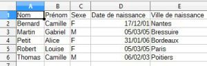
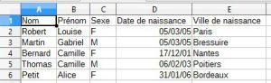
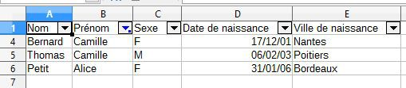

TP - Utilisation d'un tableur¶
Partie 1 - Prise en main de LibreOffice Calc¶
Exemple_table.csv
Pour chaque bloc "À faire" qui suit, effectuer les opérations indiquées.
À faire 1
- Une fois que vous avez téléchargé votre fichier, rendez-vous sur votre dossier de téléchargements (via le gestionnaire de fichiers), puis ouvrez le fichier
Exemple_table.csvavec le logiciel LibreOffice Calc (clic droit, ouvrir avec, LibreOffice). - Assurez-vous que le séparateur
virgulesoit bien coché. - Afin que les données correspondant au descripteur
"Date de naissance"soient gérées en tant que date, cliquer sur la colonne et sélectionner"Date (JMA)".
À faire 2 - Le tri
Il est possible de trier les données selon une ou plusieurs colonnes (un ou plusieurs descripteurs).
Dans le menu "Données", cliquer sur "Trier...".
Cocher la case "La plage contient des étiquettes de colonne".
- Effectuer un tri croissant sur le nom, la table de données devrait s'afficher ainsi :
 - Effectuer maintenant un tri décroissant sur le prénom et un tri croissant sur la date de naissance, la table de données devrait s'afficher ainsi :

À faire 3 - Les filtres
Pour montrer seulement certaines lignes (donc certains objets) du fichier, on utilise des filtres.
Sélectionner tout le tableau, puis aller dans le menu "Données", et cliquer sur "AutoFiltre".
Des listes déroulantes apparaissent pour chaque colonne (descripteur).
Pour filtrer les personnes nées en 2005, décocher "Tout" puis cocher "2005".

On souhaite maintenant filtrer les personnes dont le prénom contient la lettre "c".
Dans le menu déroulant du "Prénom", cliquer sur "Filtre standard" (dans le menu "Filtrer par condition"), et choisir ensuite la condition "Contient".

Pour supprimer un filtre, re-cliquer sur le bouton "Autofiltre" après avoir sélectionné votre tableau.
À faire 4 - Les calculs
Les calculs permettent de déterminer le nombre d'objets partageant un ou plusieurs descripteurs communs.
Les calculs commencent par le signe = et sont réalisés à l'aide de fonctions.
Cliquer sur la cellule F1 puis sur le bouton fx (Assistant fonction).

Compter le nombre de lignes contenant une donnée (non vide) pour le descripteur "Nom" (la colonne A entière se note A:A), en utilisant la fonction NBVAL.
Cliquer sur "OK", la cellule F1 devrait maintenant afficher 6.
Cela correspond bien au total de la ligne des descripteurs et des 5 objets.
Compter le nombre de personnes dont le prénom contient la lettre "c", en utilisant la fonction NB.SI. On exclut la 1ère ligne de la plage (B2:B6).
On utilisera le critère "*c*".
Cliquer sur "OK", la cellule F1 devrait maintenant afficher 3.
Cela correspond bien aux 2 "Camille" et à "Alice".
Compter le nombre de personnes nées avant 2005 ("<01/01/2005"), en utilisant la fonction NB.SI. On exclut la 1ère ligne de la plage (D2:D6).
Cliquer sur "OK", la cellule F1 devrait maintenant afficher 2.
Cela correspond bien aux 2 "Camille".
Enfin, compter le nombre de filles ("F") nées après 2004 (">=01/01/2005"), en utilisant la fonction NB.SI.ENS.
À faire 5 - Les calculs (suite)
Les calculs permettent également de créer de nouvelles données.
Le calcul sera alors saisi sur la 2ème ligne d'une colonne vide puis dupliqué pour toutes les lignes.
On peut calculer en temps réel l'âge des personnes, en utilisant les fonctions ANNEES et AUJOURDHUI.
Pour commencer, calculer l'âge de la 1ère personne.
On souhaite l'appliquer à l'ensemble des personnes.
Cliquer sur le carré noir en bas à droite de la cellule, et faire glisser vers le bas.
On souhaite calculer la moyenne d'âge des personnes.
Se placer sur la cellule F7, puis utiliser la fonction MOYENNE.
Partie 2 - Les longs métrages Disney¶
Téléchargez le fichier csv suivant :
Les_longs_metrages_Disney_sans_separateur.csv
Téléchargez le document-réponse (vous y écrirez les réponses aux questions) suivant :
Doc_réponses_partie2.odt
Question 1
La tableau de données est-elle exploitable ?
Indice question 1
Observer les données de l'objet sur la ligne 15
Ouvrir le fichier précédent (Les_longs_metrages_Disney_sans_separateur.csv) avec le logiciel Notepad++ (clic droit, puis "Edit with Notepad++").
Télécharger le fichier suivant et l'ouvrir également avec NotePad++.
Les_longs_metrages_Disney.csv
Question 2
Quelle est la différence entre les deux fichiers ?
Ouvrir maintenant Les_longs_metrages_Disney.csv dans LibreOffice Calc.
Au lancement, assurez-vous que la virgule soit bien sélectionnée comme séparateur.
Question 3
Trier les longs métrages selon leur titre par ordre croissant.
Vous mettrez une capture d'écran du résultat dans votre document-réponse.
Indice question 3
Dans le menu "Données", cliquer sur "Trier...".
Question 4
Trier les longs métrages selon leur numéro de "classique d'animation" (par ordre décroissant) et leur commentaire (par ordre croissant).
Vous mettrez une capture d'écran du résultat dans votre document-réponse.
Indice question 4
Il faut réaliser deux tris simultanés : tri1 sur numéro de "classique d'animation" et tri2 sur le commentaire.
Question 5
Filtrer les longs métrages du XXIe siècle qui ne sont pas des classiques Disney.
Trier le résultat par date de sortie (ordre croissant).
Vous mettrez une capture d'écran du résultat dans votre document-réponse.
Indice question 5
Dans le menu "Données", cliquer sur "AutoFiltre".
XXIe siècle : date >= 01/01/2000
Les longs métrages qui n'ont pas de numéro de "Classique Disney" ne sont pas considérés comme des classiques.
Question 6
Filtrer les longs métrages dont le titre commence par un "V", qui sont des classiques Disney et dont le commentaire indique une coproduction avec Pixar.
Vous mettrez une capture d'écran du résultat dans votre document-réponse.
Indice question 6
Commencer par filtrer le titre :
Dans le menu "Données", cliquer sur "Plus de filtres/Filtre standard".
Utiliser la condition "Commence par".
Question 7
Compter le nombre de longs métrages classique Disney sortis au XXIe siècle.
Indice question 7
Pour compter le nombre de longs métrages classique Disney ("*") sortis au XXIe siècle (">=01/01/2000"), on utilise la fonction NB.SI.ENS.
Question 8
Compter le nombre de longs métrages dont le titre ne contient qu'un seul mot sortis au XXe siècle.
Indice question 8
Pour compter le nombre de longs métrages dont le titre ne contient qu'un seul mot ("<>"&"* *") sortis au XXe siècle ("<01/01/2000"), on utilise la fonction NB.SI.ENS.
Partie 3 - Les communes des Deux-Sèvres¶
De nombreux sites offrent l’accès à leurs données au format ouvert (ou libre) sans aucun obstacle technique et aucune restriction à leurs utilisations, même commerciales.
Dans un moteur de recherche, saisissez les mots-clés "géolocalisation communes deux sevres csv".
Parmi les résultats, vous devriez trouver celui du site opendatasoft.com : https://public.opendatasoft.com/explore/dataset/correspondance-code-insee-code-postal/table/
Dans le menu de gauche, filtrer la liste pour ne conserver que les communes des Deux-Sèvres.
Cliquer sur "Export".
Enregistrer le fichier .CSV dans votre H:\Travail sous le nom liste_communes_79.csv.
Noter que le séparateur des données ne sera pas la virgule mais le point-virgule.
Ouvrir le fichier .CSV avec LibreOffice Calc.
À l'aide de la touche Ctrl, sélectionner les colonnes "Altitude moyenne", "Superficie" et "Population" et choisissez le type "Anglais US" indiquant que ce sont des nombres décimaux notés avec un point.
Supprimer les colonnes "département" et "région" ainsi que toutes les colonnes après "geo_shape".
Enregistrer les modifications.
Téléchargez le document-réponse (vous y écrirez les réponses aux questions) suivant :
Doc_réponses_partie3.odt
Question 1
Combien d'habitants résident à Moncoutant ?
Indice question 1
Si besoin, rechercher la population de votre commune.
Question 2
Quelle l'unité de l'altitude ? Même question pour la superficie ?
Indice question 2
Trouver des éléments de comparaison (altitude du Mont-Blanc soit 4 809m, superficie d'un terrain de tennis soit environ 200 m²)
Question 3
Quelles données contient la colonne "geo_point_2d" ? Pourquoi chaque donnée contient une virgule ?
Indice question 3
"geo" est l’abréviation de "geographic".
Il faut donc séparer les données contenues dans la colonne "geo_point_2d".
Sélectionner la colonne (cliquer sur la lettre correspondante).
Dans le menu "Données", cliquer sur "Texte en colonnes..."
Choisir la virgule comme séparateur.
À l'aide de la touche Ctrl, sélectionner les deux colonnes et choisissez le type "Anglais US" indiquant que ce sont des nombres décimaux notés avec un point.
Modifier le titre de chaque colonne.
Enregistrer les modifications.